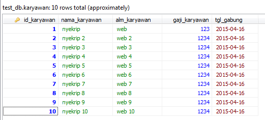

Pada tutorial Lengkap belajar PHP MySQL
untuk pemula ini mencakup dasar-dasar pemrograman MySQL dengan PHP.
MySQL adalah sistem manajemen database yang populer. PHP tersedia gratis
dan bisa bekerja dengan hampir semua perangkat lunak database,
termasuk Oracle dan Sybase tetapi paling sering digunakan adalah
database MySQL. Seperti PHP, perangkat lunak database MySQL tersedia
secara gratis.
Karena PHP dan MySQL disediakan secara gratis, maka tidak heran jika
banyak pengembang web menggunakan PHP dan MySQL. Selain gratis, PHP
dan MySQL sangat stabil untuk diaplikasikan pada software skala kecil
maupun besar. Banyak CMS yang telah memanfaatkan PHP dan MySQL,
contohnya WordPress, Joomla, Drupal dan sebagainya.
Tutorial PHP: PHP secara singkat
- PHP adalah perangkat lunak open-source alias gratis
- PHP kependekan dari PHP: Hypertext Preprocessor (Personal Home Page).
- PHP adalah bahasa skrip server-side, lawan dari Javascript yang client-side.
- PHP hampir bisa mendukung kebanyakan database (MySQL, Informix, Oracle, Sybase, Solid, PostgreSQL, Generic ODBC, dll.)
- PHP didukung hampir semua Sistem Operasi (OS).
Tutorial MySQL: MySQL secara singkat
- MySQL adalah perangkat lunak server database open-source alias gratis
- MySQL bisa diaplikasikan dengan baik pada aplikasi skala kecil ataupun besar.
- MySQL didukung hampir semua Sistem Operasi (OS).
Belajar PHP MySQL: Persiapan awal
Sebelum melangkah lebih jauh, diharapkan anda sudah memahami poin dibawah ini:
- Anda sudah memahami dasar-dasar MySQL dan PHP.
- Download dan sudah menginstal versi terbaru dari MySQL.
- Download dan sudah menginstal Apache versi terbaru.
- Mengetahui username dan password server MySQL.
Jika Anda belum menginstal MySQL dan Apache, silahkan anda kunjungi tutorial “ Cara Install XAMPP Web Server di Windows ”. Setelah anda mengikuti tutorial tersebut maka untuk username MySQL adalah “ root “ dan password-nya kosong. Berikut adalah gambar dari tabel karyawan dalam database test_db yang merupakan hasil akhir dari tutorial.

Tabel hasil Belajar PHP MySQL
Tutorial Lengkap Belajar PHP MySQL: Daftar Tutorial
Setelah anda sudah install PHP dan MySQL, langkah selanjutnya adalah
mencoba dan mempelajari tutorial dibawah ini secara berurutan, mulai
koneksi sampai backup database MySQL melalui skrip PHP.
- Cara Membuka Menutup Koneksi MySQL PHP – Mempelajari cara menggunakan PHP untuk membuka dan menutup koneksi database MySQL.
- Cara Membuat Tabel dan Database MySQL di PHP – Bagian ini menjelaskan cara membuat database MySQL dan tabel menggunakan PHP.
- Cara Menghapus Tabel dan Database MySQL di PHP – Bagian ini menjelaskan cara menghapus database dan tabel MySQL menggunakan PHP.
- Cara Insert Tambah data Database MySQL PHP – Setelah membuat database dan tabel maka selanjutnya mempelajari memasukkan data ke dalam tabel yang telah dibuat.
- Cara Menampilkan Data Database MySQL PHP – Mempelajari cara untuk mengambil dan menampilkan data dari database MySQL menggunakan PHP.
- Membuat Halaman Paging dengan MySQL PHP
– Pada bagian ini menjelaskan bagaimana menggunakan query untuk membagi
hasil data menjadi beberapa halaman dan sekaligus membuat link
navigasi.
- Skrip Cara Update Data Tabel MySQL di PHP – Bagian ini menjelaskan cara memperbarui data yang ada dalam database MySQL menggunakan PHP.
- Cara hapus data Tabel di Database MySQL PHP – Bagian ini menjelaskan cara menghapus atau membersihkan data yang ada di database MySQL menggunakan PHP.
- Cara Backup Restore Database MySQL di PHP – Mempelajari cara untuk membuat dan menggunakan backup dari database MySQL untuk tujuan keamanan.
Contoh-contoh skrip atau tutorial diatas merupakan contoh sederhana,
anda bisa mengembangkan sesuai kebutuhan pengembangan web. Demikian
tutorial lengkap belajar PHP MySQL untuk pemula, semoga bisa membantu
untuk lebih mendalami ilmu PHP dan MySQL.
Sumber : PHP – MySQL
Happy Nyekrip!
Sumber : Happy Nyekrip!
{kind=link}